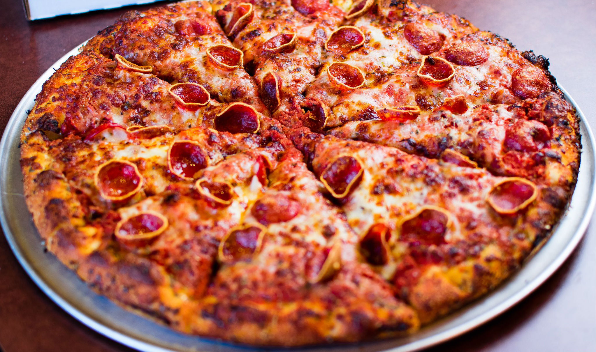

Здрасте
Виды пиццы и тп.
Ну пицца пирог
Рецепт:пирог и духовка
Вкус как у пирога
Оценка:5 бабушек из 10

Веганская еда
Рецепт:салат,духовка,готово.
На вкус как салат
Оценка:6 веганов из 10
пиперонни с чем-то место корочки
рецепта нету
в общем обычная пиперонни с другой корочкой
Оценка:10 сосисок из 100
ПОЖРАТЬ МОЖНО В
например в Пицца шляпа(Дальше сами думайте,мне лень)
В Пицце 2 Берега
не советую брать пиццу
Вопщем,пицца это кайф